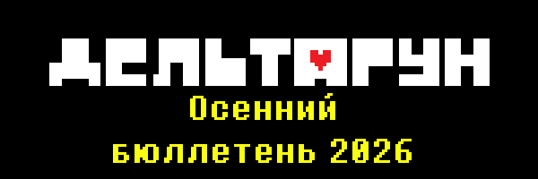
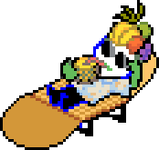
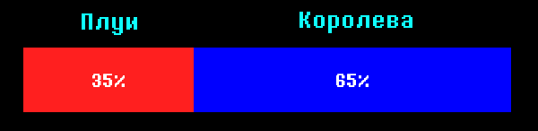
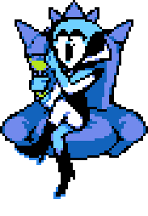
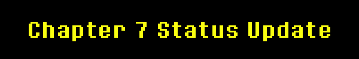
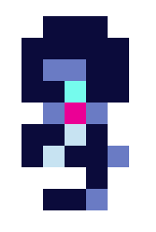
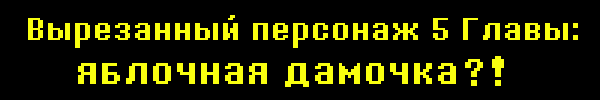
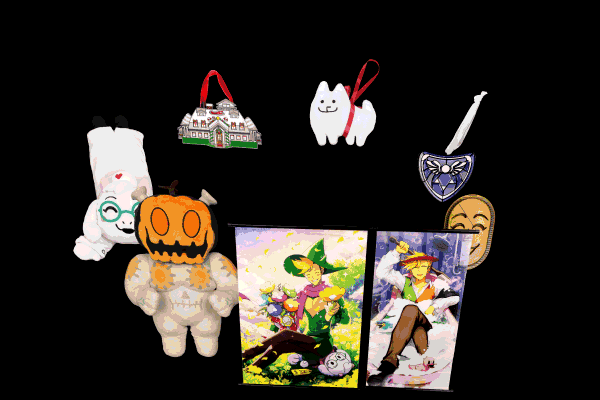

Вау, вот и осень... Не могу поверить, что лето уже кончилось!
...
Пожалуйста, перестаньте доставать новогодние украшения.
|
 |

|

Прогресс разработки 6 главы идëт плавно.
Игра сейчас в состоянии полностью играбельного черновика, который можно пройти от начала и до конца. Все локации, события, и битвы уже существуют. (Но есть одно необязательное место, разработка которого подзатянулась...)
К моменту, когда вы это читаете, мы уже начали локализацию и первоначальное тестирование. Большая часть контента выглядит готовой... Но некоторые важные сцены и детали всё ещё сыроваты, так что нам нужно ещё немного времени до того, как мы перейдëм к полноценной тестировке.
Несмотря на то, что шестая глава будет короткой, я бы хотел, чтобы она была идеальной. Я не могу спешить.
Ваши голоса В СТУДИЮ!

Королева победила!!!

Наградой за вашу активность будет эта глупенькая сценка из шестой главы.



Ну, мы только начали...
Я проговорил сюжет и основные события седьмой главы команде. Но, когда история подходила к своему апогею, я замолчал. Сказав, что команде нужно сделать больше, чтобы я мог закончить рассказ.
Все согласны, что так интересней.
Члены команды, завершившие свои задачи в шестой главе, были направлены на разработку седьмой. Наконец-то чувствую, что я знаю, что делаю, в отличие от работы над другими главами, так что я полон уверенности!..


Уже очень давно моя подруга Марина сделала для пятой главы дизайн Яблочной Дамочки. Она была бы торговкой в первой локации, которая продавала бы свои вкусные яблочки. Я думаю всем понятно, что она была бы очень зла, если кому-то не понравились бы её вкусные яблочки...
В конце концов, у неё было слишком много схожестей с Розовой, так что я решил не добавлять её в игру. Плюс, у яблок появились и другие значения в истории игры, так что могло получится странновато.
Новый альбом ДЕЛЬТАРУН на пианино от Тревора Алана Гомеса. Музыка из прошлого альбома использовалась в титрах пятой главы... Так что мне самому очень интересно послушать!

Они что-то сделали.


Кажется, я каждый раз так говорю, но с расширением команды после 5 главы нам требуется всё больше и больше времени, чтобы разработка ДЕЛЬТАРУНА шла максимально быстро. Я понимаю, что отсутствие новостей может раздражать, но отсутствие новостей — уже хорошая новость.
Я сделаю ещё одну рассылку, когда локализация 6 главы будет готова!